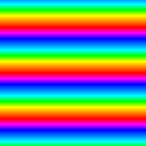
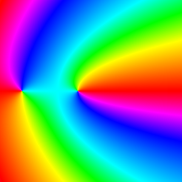
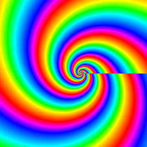
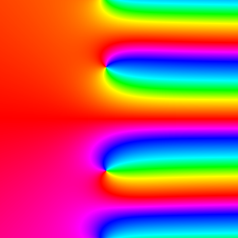
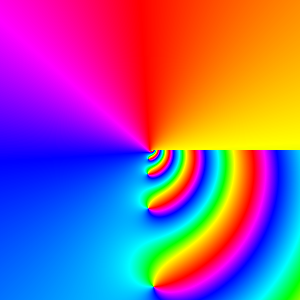
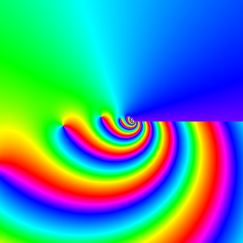

HypergeometricFunctions.jl Documentation
Introduction
HypergeometricFunctions.jl provides a numerical computation of generalized hypergeometric functions. The main exported function and recommended interface is pFq, but there are a few others for specialists' convenience.
HypergeometricFunctions.pFq — FunctionpFq(α, β, z)Compute the generalized hypergeometric function, defined by
\[{}_pF_q(α, β, z) = \sum_{k=0}^\infty \dfrac{(\alpha_1)_k\cdots(\alpha_p)_k}{(\beta_1)_k\cdots(\beta_q)_k}\dfrac{z^k}{k!},\]
where the series converges and elsewhere by analytic continuation.
External links: DLMF, Wikipedia.
Examples
julia> pFq((), (), 0.1) # ≡ exp(0.1)
1.1051709180756477
julia> pFq((0.5, ), (), 1.0+0.001im) # ≡ exp(-0.5*log1p(-1.0-0.001im))
22.360679774997894 + 22.36067977499789im
julia> pFq((), (1.5, ), -π^2/4) # A root of a spherical Bessel function
4.042865030283967e-17
julia> pFq((), (1.5, ), -big(π)^2/4) # In extended precision
8.674364372518869408017614476652675180406967418943475242812160199356160822272727e-78
julia> pFq((1, ), (2, ), 0.01) # ≡ expm1(0.01)/0.01
1.0050167084168058
julia> pFq((1/3, ), (2/3, ), -1000) # A confluent hypergeometric with large argument
0.050558053946448855
julia> pFq((1, 2), (4, ), 1) # a well-poised ₂F₁
2.9999999999999996
julia> pFq((1, 2+im), (3.5, ), exp(im*π/3)) # ₂F₁ at that special point in ℂ
0.6786952632946592 + 0.4523504929285015im
julia> pFq((1, 2+im), (3.5, ), exp(im*big(π)/3)) # More digits, you say?
0.6786952632946589823300834090168381068073515492901393549193461972311801512528996 + 0.4523504929285013648194489713901658143893464679689810112119412310631860619947939im
julia> pFq((1, 2+im, 2.5), (3.5, 4), exp(im*π/3)) # ₃F₂ because why not
0.8434434031615691 + 0.34175507615463174im
julia> pFq((1, 2+im, 2.5), (3.5, 4), exp(im*big(π)/3)) # Also in extended precision
0.8434434031615690763389963048175253868863156451003855955719081209861492349268002 + 0.3417550761546319732614495656712509723030350666571102474299311122586948108413206im
julia> pFq((1, 1), (), -1) # A divergent series
0.5963473623231942
julia> pFq((1, 1), (), -big(1))
0.5963473623231940743410784993692793760741778601525487815734849104823272191142015Complex phase portraits
Broadly speaking, there are three classes of generalized hypergeometric functions: when $p\le q$ they are entire functions of the complex variable $z$; when $p = q+1$, they are analytic functions in the cut plane $\mathbb{C}\setminus[1,\infty)$; and, when $p > q+1$, they are analytic functions in the cut plane $\mathbb{C}\setminus[0,\infty)$.
Examples of each of these classes are illustrated over $\left\{z\in\mathbb{C} : -10<\Re z<10, -10<\Im z<10\right\}$ with complex phase portraits, a beautiful tool in computational complex analysis.
using ComplexPhasePortrait, HypergeometricFunctions, Images
x = range(-10, stop=10, length=300)
y = range(-10, stop=10, length=300)
z = x' .+ im*y
import Logging # To avoid printing warnings
Logging.with_logger(Logging.SimpleLogger(Logging.Error)) do
img = portrait(map(z->pFq((), (), z), z), ctype = "nist")
save("0F0.png", img)
img = portrait(map(z->pFq((), (1.0, ), z), z), ctype = "nist")
save("0F1.png", img)
img = portrait(map(z->pFq((0.5, ), (0.75, ), z), z), ctype = "nist")
save("1F1.png", img)
img = portrait(map(z->pFq((3.5+7.5im, ), (), z), z), ctype = "nist")
save("1F0.png", img)
img = portrait(map(z->pFq((1.0, 3.5+7.5im), (0.75, ), z), z), ctype = "nist")
save("2F1.png", img)
img = portrait(map(z->pFq((1.0, 1.5+7.5im), (), z), z), ctype = "nist")
save("2F0.png", img)
end| p\q | 0 | 1 |
|---|---|---|
| 0 |  |  |
| 1 |  |  |
| 2 |  |  |
Library
HypergeometricFunctions._₁F₁ — FunctionCompute Kummer's confluent hypergeometric function ₁F₁(a, b, z).
HypergeometricFunctions._₂F₁ — FunctionCompute the Gauss hypergeometric function ₂F₁(a, b, c, z).
HypergeometricFunctions._₃F₂ — FunctionCompute the generalized hypergeometric function ₃F₂(a₁, 1, 1, b₁, 2, z).
Compute the generalized hypergeometric function ₃F₂(a₁, a₂, a₃, b₁, b₂; z).
Internals
HypergeometricFunctions.M — FunctionCompute Kummer's confluent hypergeometric function M(a, b, z) = ₁F₁(a, b, z).
HypergeometricFunctions.U — FunctionCompute Tricomi's confluent hypergeometric function U(a, b, z) ∼ z⁻ᵃ ₂F₀((a, a-b+1), (), -z⁻¹).
HypergeometricFunctions._₂F₁positive — FunctionCompute the Gauss hypergeometric function ₂F₁(a, b, c, z) with positive parameters a, b, and c and argument 0 ≤ z ≤ 1. Useful for statisticians.
HypergeometricFunctions._₂F₁general — FunctionCompute the Gauss hypergeometric function ₂F₁(a, b, c, z) with general parameters a, b, and c. This polyalgorithm is designed based on the paper
N. Michel and M. V. Stoitsov, Fast computation of the Gauss hypergeometric function with all its parameters complex with application to the Pöschl–Teller–Ginocchio potential wave functions, Comp. Phys. Commun., 178:535–551, 2008.
HypergeometricFunctions._₂F₁general2 — FunctionCompute the Gauss hypergeometric function ₂F₁(a, b, c, z) with general parameters a, b, and c. This polyalgorithm is designed based on the review
J. W. Pearson, S. Olver and M. A. Porter, Numerical methods for the computation of the confluent and Gauss hypergeometric functions, Numer. Algor., 74:821–866, 2017.
HypergeometricFunctions.pFqdrummond — FunctionpFqdrummond(α, β, z; kmax)Compute the generalized hypergeometric function pFq by rational approximations of type (k, k) generated by Drummond's sequence transformation described in
R. M. Slevinsky, Fast and stable rational approximation of generalized hypergeometric functions, Numer. Algor., 98:587–624, 2025.
HypergeometricFunctions.pFqweniger — FunctionpFqweniger(α, β, z; kmax, γ = 2)Compute the generalized hypergeometric function pFq by rational approximations of type (k, k) generated by a factorial Levin-type sequence transformation described in
R. M. Slevinsky, Fast and stable rational approximation of generalized hypergeometric functions, Numer. Algor., 98:587–624, 2025.
HypergeometricFunctions.pFqcontinuedfraction — FunctionCompute the generalized hypergeometric function pFq(α, β, z) by continued fraction.
HypergeometricFunctions.pochhammer — FunctionPochhammer symbol $(x)_n = \frac{\Gamma(x+n)}{\Gamma(x)}$ for the rising factorial.
HypergeometricFunctions.@clenshaw — Macro@clenshaw(x, c...)Evaluate the Chebyshev polynomial series $\displaystyle \sum_{k=1}^N c[k] T_{k-1}(x)$ by the Clenshaw algorithm.
External links: DLMF, Wikipedia.
Examples
julia> HypergeometricFunctions.@clenshaw(1, 1, 2, 3)
6
julia> HypergeometricFunctions.@clenshaw(0.5, 1, 2, 3)
0.5HypergeometricFunctions.@lanczosratio — Macro@lanczosratio(z, ϵ, c₀, c...)Evaluate $\dfrac{\displaystyle \sum_{k=0}^{N-1} \frac{c[k+1]}{(z+k)(z+k+\epsilon)}}{\displaystyle c_0 + \sum_{k=0}^{N-1} \frac{c[k+1]}{z+k}}$.
This ratio is used in the Lanczos approximation of $\log\frac{\Gamma(z+\epsilon)}{\Gamma(z)}$ in
N. Michel and M. V. Stoitsov, Fast computation of the Gauss hypergeometric function with all its parameters complex with application to the Pöschl–Teller–Ginocchio potential wave functions, Comp. Phys. Commun., 178:535–551, 2008.
HypergeometricFunctions.G — FunctionCompute the function $\dfrac{\frac{1}{\Gamma(z)}-\frac{1}{\Gamma(z+\epsilon)}}{\epsilon}$ by the method dscribed in
N. Michel and M. V. Stoitsov, Fast computation of the Gauss hypergeometric function with all its parameters complex with application to the Pöschl–Teller–Ginocchio potential wave functions, Comp. Phys. Commun., 178:535–551, 2008.
HypergeometricFunctions.P — FunctionCompute the function $\dfrac{(z+\epsilon)_m-(z)_m}{\epsilon}$ by the method dscribed in
N. Michel and M. V. Stoitsov, Fast computation of the Gauss hypergeometric function with all its parameters complex with application to the Pöschl–Teller–Ginocchio potential wave functions, Comp. Phys. Commun., 178:535–551, 2008.
Logo
using ComplexPhasePortrait, HypergeometricFunctions, Images
x = range(-1, stop=3, length=300)
y = range(-2, stop=2, length=300)
z = x' .+ im*y
img = portrait(map(z->pFq((4.25, -10.5), (7.5 + 10.0*im, ), z), z), ctype = "nist")
save("assets/logo.png", img)